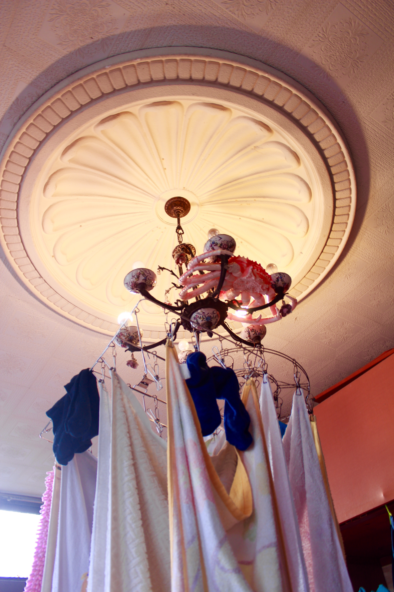
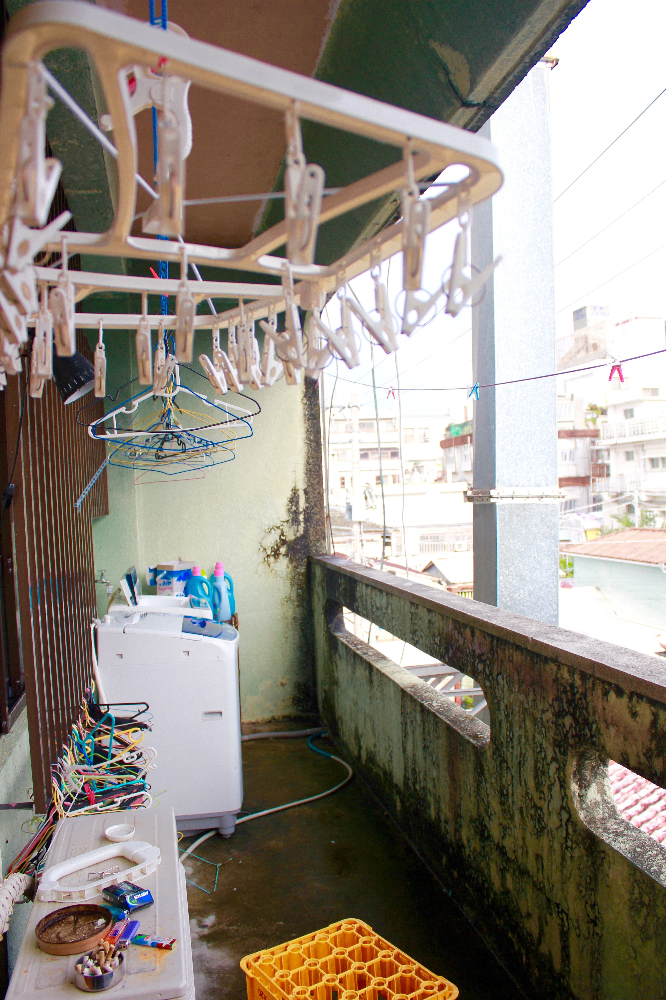
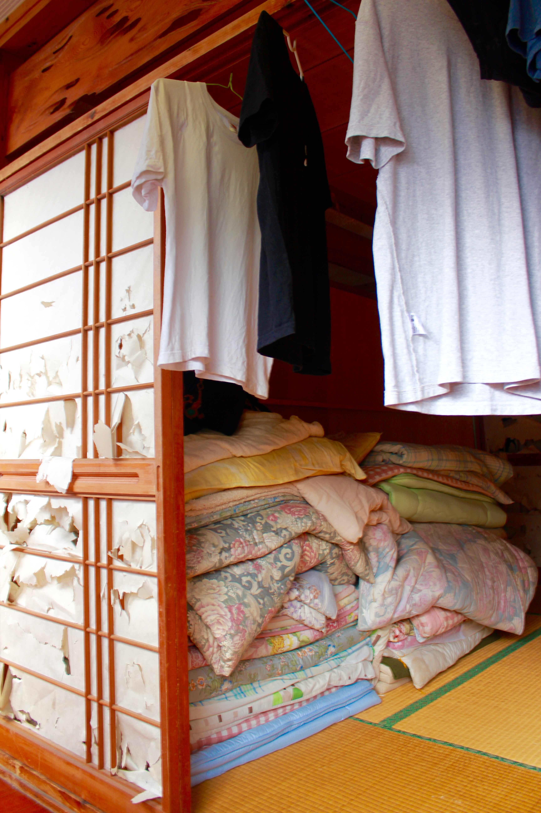
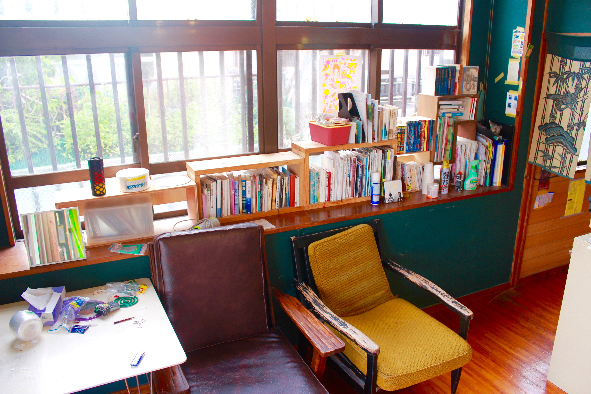
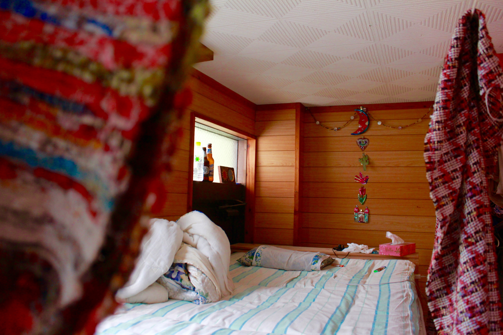

The first time I timidly came upstairs and saw Peter working at a desk, I asked him, “is this your room?”
It was a dumb question. There are only 3 rooms upstairs - all shared - and despite each member having their own bed, I’ve seen them sprawled about and dozing in various comfy corners of the house. They say it’s cooler downstairs where the couches are, and so I’ve become strangely comfortable with working on my laptop next to a snoring Peter or Takao or Mintaro-san.
I was told to feel free to come upstairs and take photos or hang out, but I still feel like I’m intruding. This is where they sleep (mostly), bathe, dry their clothes, and disappear to in the midst of a raucous party, to smoke or settle in for the night. Out of respect (though I feel that the members wouldn’t have cared) I waited till they had vacated the second floor to film/photograph this space. But the only truly “private” space I could see were their beds, which have makeshift curtain dividers. All the doors on this floor had been removed.
Holding my camera and pushing aside drying shirts and socks, I still felt like I was intruding. I can’t shake these borders, the separation of public and private space that I’ve grown up with.
To roof
{kind=link}
{kind=link}
{kind=link}
{kind=link}
{kind=link}